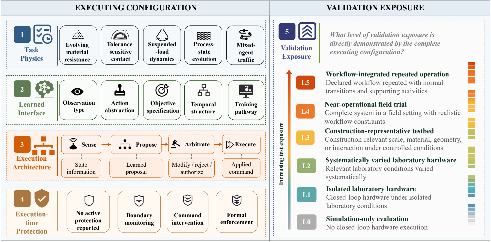
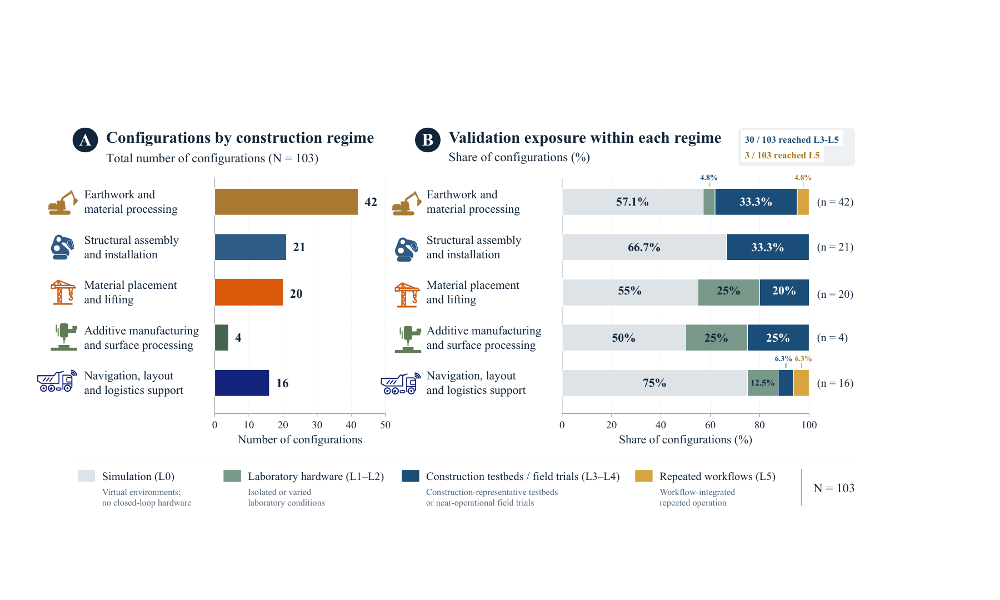
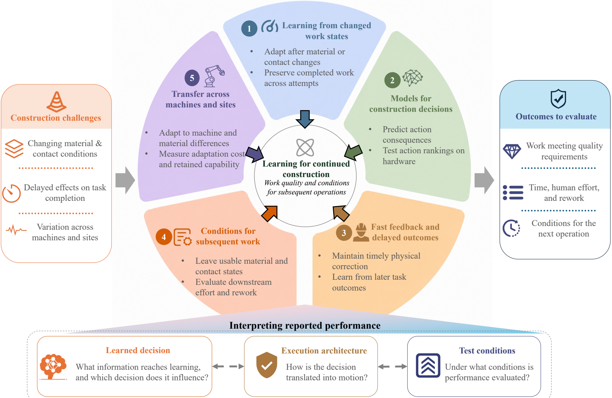

The review question
What does learning improve?
Construction robots change the materials and workspaces in which they operate. A learned decision can affect both current execution and the conditions for subsequent work.
The review asks what experience can improve, how learned decisions are executed, and which construction outcomes are measured. DRL can connect earlier decisions to later consequences when those consequences are represented in the observations, objective, and decision horizon.

Evidence at a glance
Five task families. Different physical demands.
Of 136 eligible reports, 103 support comparison of 103 executing configurations. One companion-report pair is considered together, while one study contributes two distinct configurations. The remaining 33 reports inform the contextual synthesis.

Testing conditions are not a maturity score.
Seventy-three configurations were evaluated in simulation or controlled laboratories. Thirty reached construction-representative or broader conditions, including three at workflow-integrated repeated operation. These distributions do not establish industry-wide prevalence or causal effects of testing.
Validation exposure levels
| Level | Highest demonstrated exposure | Count |
|---|---|---|
| L0 | Simulation-only evaluation | 63 |
| L1 | Isolated laboratory hardware | 4 |
| L2 | Systematically varied laboratory hardware | 6 |
| L3 | Construction-representative testbed | 22 |
| L4 | Near-operational field trial | 5 |
| L5 | Workflow-integrated repeated operation | 3 |
Research directions
From learning measures to construction outcomes.
Align observations, objectives, and experience with changing work states. Evaluate decision models, delayed consequences, conditions for subsequent work, and transfer across machines and sites.

Resources and contributions
Read, inspect, and contribute.
The repository provides a reading guide, review figures and supplementary materials. The physical outcome evidence documents 30 configurations, including 28 with task-endpoint evidence, 12 with work-output evaluation and 3 with a characterized state connected to subsequent work. Each indicator is assessed separately. A verified paper record will be linked when available.